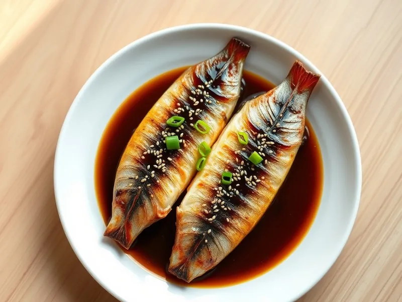

Филе скумбрии в соевом соусе на сковороде
Филе скумбрии с хрустящей кожей в соевой глазури с чесноком и имбирём
20 мин2 порц.384 ккал на порциюБ 28 · Ж 25 · У 12Азиатская кухня
Открыть в приложении: порции, таймеры, список покупок
Продукты на 2 порц.
- Скумбрия1 шт
- Соевый соус2 ст. л.
- Сахар2 ч. л.
- Вода30 мл
- Чеснок1 зуб.
- Имбирь10 г
- Крахмал1 ч. л.
- Растительное масло2 ч. л.
- Зелёный лук по желаниюпо вкусу
- Кунжут по желанию1 ч. л.
Как готовить
- Разделайте скумбрию на два филе, удалите хребет и крупные косточки, обсушите полотенцем и разрежьте каждое филе пополам.
- Смешайте соевый соус, сахар, воду, тёртый имбирь и рубленый чеснок.
- Слегка обваляйте филе в крахмале и выложите кожей вниз в разогретое масло. Жарьте на среднем огне 4 минуты до хрустящей кожи.
- Переверните и жарьте ещё 2-3 минуты, пока мясо не станет непрозрачным и не будет легко расслаиваться вилкой.
- Влейте соус и уваривайте 1-2 минуты, поливая рыбу, пока он не загустеет. Посыпьте зелёным луком и кунжутом.
Совет. Соус солёный, поэтому рыбу заранее не солите. Подайте с рисом или тушёной капустой.